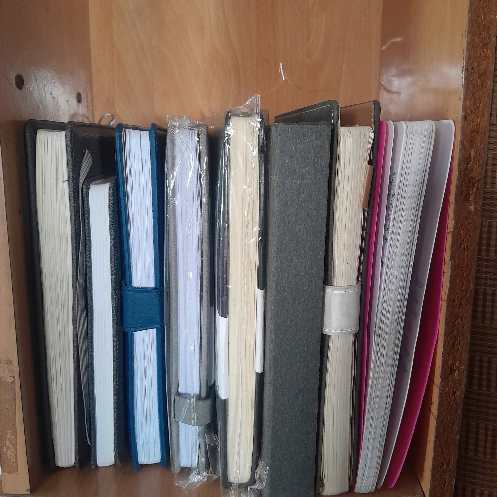

Những Ngày Đã Qua
Bắt đầu viết nhật ký
Hồi đó tôi viết như vầy:
Sau 1 thời gian suy nghĩ và đắn đo mãi thì hôm nay tôi đã cầm bút lên và bắt đầu viết. Mục đích là muốn cải thiện kỹ năng viết, viết những gì mình thích mà không có giáo viên chấm điểm.

Lần đầu xa nhà
Xuống Hà Nội học và những cú sốc về chuyện quản lý chi tiêu. Có hôm ra quán ăn bát mỳ tôm, có mỗi gói mỳ và quả trứng mà bà lão hét tận 25k. Từ đó về sau, tôi không buồn quay lại quán ý.
Ở nhà ăn uống bừa bãi thế nào thì xuống dưới đó ăn uống tiết kiệm thế ấy.
Bắt đầu chạy bộ
Hồi đó tôi có tham gia vài giải chạy do trường tổ chức và giật giải hẳn hoi! Vui là chính, với cả hồi đấy mình đi chạy toàn để ngắm gái.
Giờ thì tôi giải nghệ môn chạy bộ rồi. Hôm nào hứng hứng thích chạy thì chạy thôi.

Theo chân ông chú vào xưởng ô tô
Tuần 7 ngày đi làm cả 7 ngày. Áo quần và tay chân lúc nào cũng dầu mỡ. Lũ con gái đi qua nhìn thấy mình thì chán luôn!
Đây cũng là lần đầu tiên "ra đời", va chạm thực tế.
Cũng nhờ đây, mồm mép mau lẹ hẳn.
Giã từ gara ô tô
Làm ở một công ty cơ khí - đúng cái ngành trước kia theo học.
Đi làm thì được các anh khen "đẹp zai thế!", "đang làm ô tô kiếm ăn thế sao lại đi làm cơ khí. Làm cơ khí vất bỏ mẹ!"